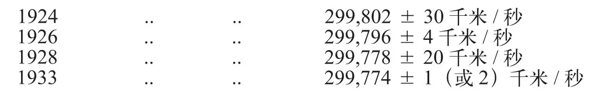

英文
英文谷瑞·德布雷
编者按
在《自然》杂志发行的前几十年中，它对于发表那些旨在抨击甚至挑战传统观点的文章是非常慎重的，但事实上它仍然发表了很多这类文章。20世纪30年代，《自然》就发表了一个名为谷瑞·德布雷的人的三篇通讯，他的观点是光速并不是永远恒定的，在1924年至1933年间光速随时间在缓慢地减小。天文学家中又掀起了这样一种风潮，即发现物理学中原以为“恒定”的事物存在缓慢变化的可能性，不过目前尚无确凿的证据证实这一观点。 英文
本专栏在1927年[1]发表了我从原始文献中汇集的关于光速的全部测定结果的列表以及对此进行的讨论。我曾指出，除了一对几乎同时于1882年获得的数值之外，最终结果（黑体字印刷）显示出光速在不断地减少。表中所给出的最后一个（也是最小的一个）数值是1926年测得的299,796±4千米/秒。 英文
在那以后，科学家又得到了两个测定结果：第一个来自卡罗卢斯和米特尔施泰特（1928），他们使用了克尔盒，并在其终端施加交变电压来代替齿轮，用以周期性地隔断光束[2]。用这种方式可以精确地计算并得到每秒百万数量级的隔断频率，从而可以使用一个极短的基线（41.386米）而丝毫不损失精确性。由此而得到的光速数值（755次测量结果的平均值）为299,778±20千米/秒。第二个近期测定结果是在2月3日出版的《自然》杂志第169页给出的，它测定于1933年，值为299,774±1（或2）千米/秒。 英文
因此，可以将最近十年中对光速这一所谓常数的测定结果（整个序列中最为精确的）排列如下：

看过上面的表后，物理学家们不得不承认，所谓的光速恒定性显然没有得到观测结果的支持。事实上，经过柯西方法[3]处理后，上述光速测量值与测量年份满足线性关系：
V千米/秒 = 299,900 – 4T20世纪各年份 英文
我第一次指出这一事实时（1924年），有人反对说现有的数据是不确定的，因为观测中的或然误差大于所谓的变化速率。阿瑟·爱丁顿爵士曾对这一误差理论[4]施以致命一击：“对于那些拒绝承认明确的事实与常识却喜欢从无法检验的猜测中得出间接推论的人来说，该理论是最后的生存堡垒，它除了数学便利性之外毫无优点可言”[5]。但是，即使是“老顽固们”也可能会对上表中第2和第4个值进行一番深刻的思考。 英文
（王耀杨 翻译；张元仲 审稿）